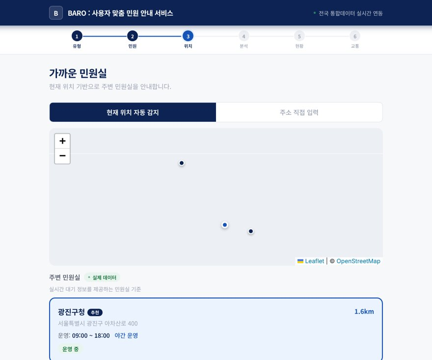
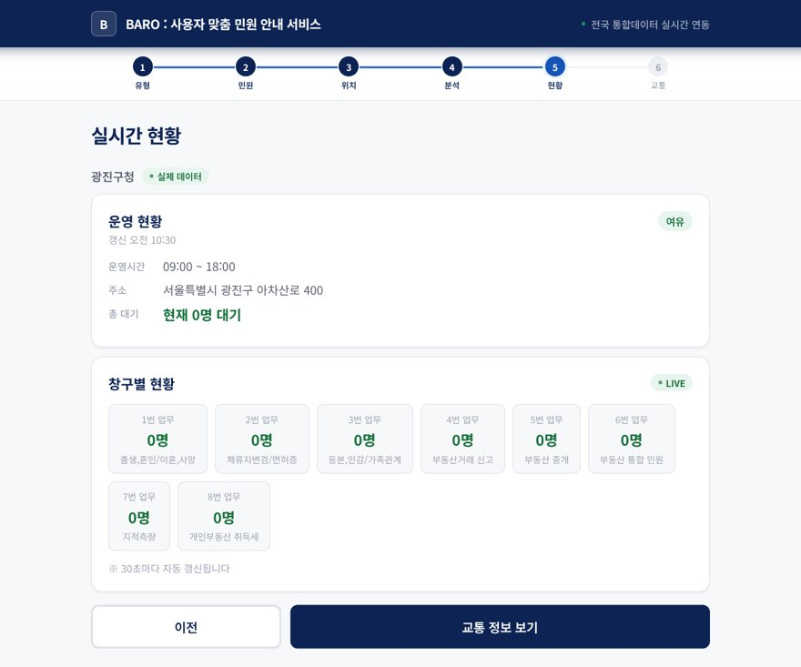
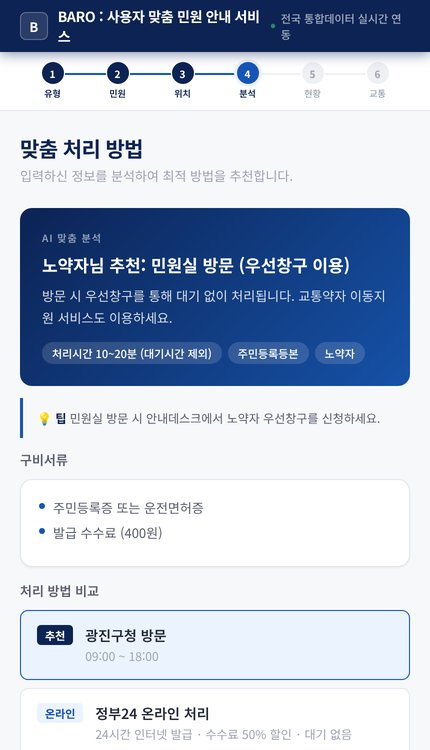
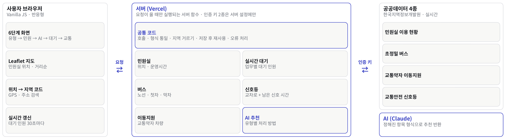
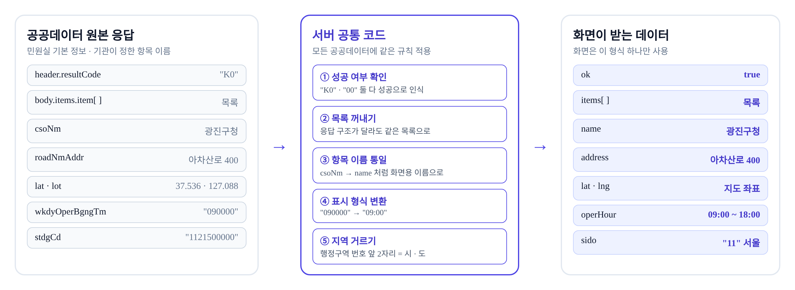
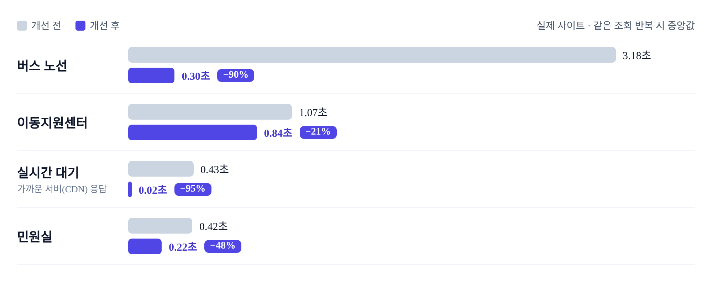

01
개요




무엇을 하나
- 방문 전에 민원 처리 방법 · 실시간 대기 · 교통을 한 번에 안내하는 웹 서비스
- 노약자 · 장애인 · 유모차 · 임산부 · 외국인 등 6가지 사용자 유형에 맞춰 처리 방법을 추천
- 기능
- AI 처리 방법 추천 · 민원실 지도 · 실시간 대기 · 교통
- 데이터
- 공공데이터 실시간 API 4종 + Claude API
2026.10 고도화에서 한 번 받은 데이터를 서버에 저장해 다시 쓰도록 바꿔, 버스 노선 반복 조회를 3.18초에서 0.30초로 줄였습니다.
02
브라우저 → 서버 함수 → 공공 API · Claude

브라우저 차단 해결서버 함수가 대신 호출
브라우저 직접 호출이 막히는 공공 API를 서버에서 호출
키 보호API 키는 환경변수에만
키 2종이 브라우저에 노출되지 않음
응답 정리화면엔 한 가지 형식
공통 모듈에서 정규화, GitHub push 시 자동 배포
내 작업
03
사용자 유형별 AI 처리 방법 추천
처리 흐름
입력 맥락사용자 유형 · 민원 · 민원실 거리 · 시각
Claude 호출 (서버)7개 항목 형식 확인 · 틀리면 오류(502)
화면에 바로 배치추천 제목 · 이유 · 구비서류 · 예상 시간 · 팁 · 온라인/무인기 비교
04
공공 API 응답 정규화와 트러블슈팅

| 문제 | 원인 | 해결 |
|---|---|---|
| 실시간 대기가 빈 화면 | 첫 응답이 비면 카드 없이 숫자만 갱신 시도 | ‘카드 표시 여부’ 상태를 분리해 없으면 다시 그림 |
| 먼 민원실에 도보 134분 추천 | 버스 데이터가 있는 지역에서만 대중교통 후보 생성 | 0.6km 기준으로 도보 / 대중교통 추천 + 지도 길찾기 |
| 강원 · 전북 지역 필터 불일치 | 특별자치도 출범으로 시도 코드 변경 (42→51, 45→52) | 주소 → 시도 코드 변환표 갱신 |
05
API 응답 속도 개선2026.10 고도화

| API | 고도화 전 | 2026.10 고도화 후 | |
|---|---|---|---|
| 버스 노선 | 3.18초 | 0.30초 | −90% |
| 실시간 대기 · 가까운 서버 저장분 | 0.43초 | 0.02초 | −95% |
| 민원실 | 0.42초 | 0.22초 | −48% |
| 이동지원센터 | 1.07초 | 0.84초 | −21% |
병렬 요청 · 서버 캐시 · CDN(전송망) 캐시 도입. 실시간 대기는 가까운 서버(CDN)에 저장된 응답을 받은 경우입니다.